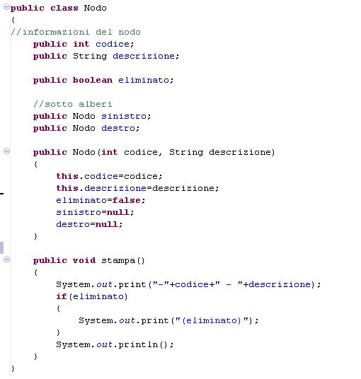

Il linguaggio Java e' un linguaggio di programmazione ad alto livello,
orientato agli oggetti
Java venne creato per soddisfare cinque obiettivi primari:
Un esempio di codice scritto in Java
Questo e' il link che riporta a Wikipedia per il linguaggio Java
JavaWiki